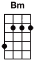
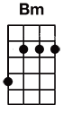

#? üî•Just A Girl


 



[Intro/Verse Riff]
e|---------------------------------|
B|---------------------------------|
G|---------------------------------|
D|-----7---------------------------|
A|-5-----------5-------5-------7---|
E|---------7-7-----6-6-----5-------|
[Solo]
e|---7-10-9-7---------------7-10-9-7---------------|
B|-7----------7--------7--7----------7--------7----|
G|--------------9--7-9-----------------9--7-9------|
D|----------------------------------------------9--| x2
A|-------------------------------------------------|
E|-------------------------------------------------|
(Intro)
Riff x4
(Verse)
(w/Riff x8)
Take this pink ribbon off my eyes
I'm exposed
And it's no big surprise
Don't you think I know
Exactly where I stand
This world is forcing me
To hold your hand
(Chorus)
'Cause [Bm] I am just a [A] girl, [G] little ol' [A] me
[Bm] Don't let me [A] out of your [G] sight
[A] ...
[Bm] I'm just a [A] girl, all [G] pretty and [A] petite
So [Bm] don't let me [A] have any [G] rights
[A] ...
[Post-Chorus] (the G and C are palm muted)
G C
Oh... I've had it up to here!
[Interlude]
Riff x2
(Verse)
(w/Riff x8)
The moment that I step outside
So many reasons
For me to run and hide
I can't do the little things
I hold so dear
'Cause it's all those little things
That I fear
(Chorus)
'Cause [Bm] I am just a [A] girl
I'd [G] rather not [A] be
'Cause they [Bm] won't let me [A] drive
Late at [G] night
[A] ...
[Bm] I'm just a [A] girl
Guess I'm [G] some kind of [A] freak
'Cause they [Bm] all sit and [A] stare
With their [G] eyes
[A] ...
[Bm] I'm just a [A] girl
Take a [G] good look at [A] me
Just your [Bm] typical [A] [G] prototype
[A] ...
[Post-Chorus] (the G and C are palm muted)
G C
Oh... I've had it up to here!
[Solo] (over chorus progression)
Bm A G A x4
G C
Oh... Am I making myself clear?
[Interlude]
Riff x2
(Bridge)
(w/Riff x6)
I'm just a girl
I'm just a girl in the world...
That's all that you'll let me be!
(Chorus)
[Bm] I'm just a [A] girl, living [G] in [A] captivity
Your rule of [Bm] thumb
Makes me [A] worry [G] some
[A] ...
[Bm] I'm just a [A] girl, [G] what's my [A] destiny?
What I've [Bm] succumbed to
Is [A] making me [G] numb
[A] ...
[Bm] I'm just a [A] girl, my [G] [A] apologies
What I've [Bm] become is [A] so [G] burdensome
[A] ...
[Bm] I'm just a [A] girl, [G] lucky [A] me
[Bm] Twiddle-dum, there's no [A] [G] comparison
[A] ...
(Outro) (the G and C are palm muted)
[G] Oh... I've [C] had it up to!
[G] Oh... I've [C] had it up to!
[G] Oh... I've [C] had it up [Bm] to here!
(slow down on the last G and let the final Bm ring out)